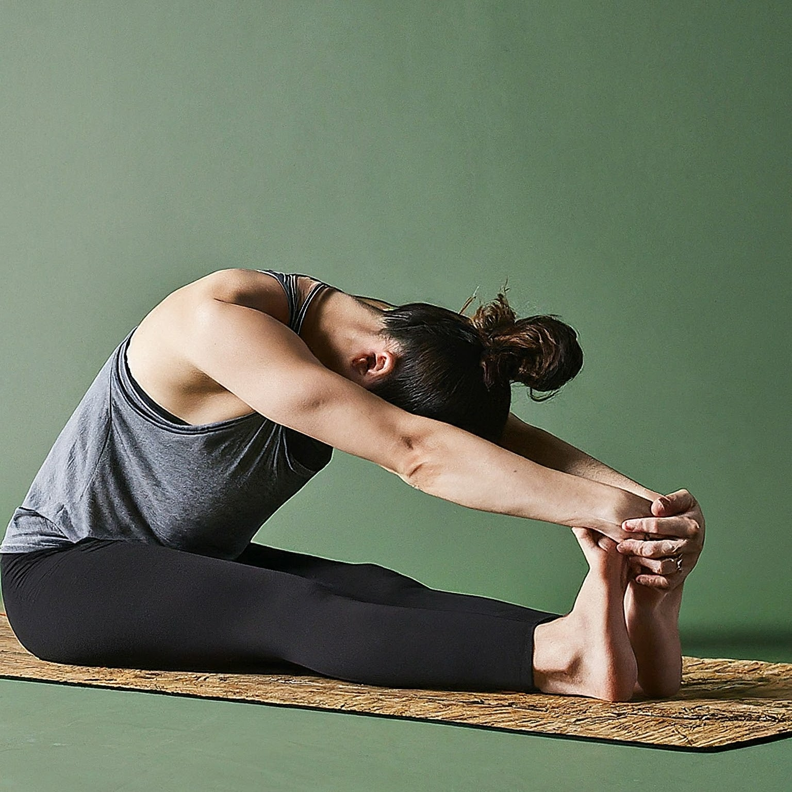

Understanding Diabetes from a Yogic Perspective
Diabetes, in the yogic tradition, is perceived as an imbalance in the body's energy flow, leading to irregularities in blood sugar levels and metabolic function. It is believed that disturbances in the flow of prana (life force energy) and poor lifestyle habits contribute to the manifestation of diabetes symptoms.
Understanding Diabetes in Yogic Terms
In yoga philosophy, the body is viewed as a temple, and its proper functioning relies on maintaining harmony within. Diabetes can result from factors such as unhealthy dietary choices, sedentary lifestyle, and stress, which disrupt the balance of the doshas (bio-energies) and impair metabolic processes.
Yogic Approaches to Managing Diabetes
Yoga offers holistic methods for managing diabetes by promoting physical activity, stress reduction, and mindful eating. Here are some yogic practices that can help:
-
Asana Practice (Yoga Poses): Yoga poses that stimulate the pancreas and improve circulation, such as Dhanurasana (Bow Pose) and Paschimottanasana (Seated Forward Bend), help regulate blood sugar levels and enhance insulin sensitivity.

-
Pranayama (Breath Control): Pranayama techniques, such as Kapalabhati (Skull Shining Breath) and Bhastrika (Bellows Breath), stimulate the metabolism, reduce stress, and promote overall well-being.
-
Mindfulness and Meditation: Mindfulness practices, such as mindful eating and meditation, cultivate awareness of food choices, regulate appetite, and improve blood glucose control.
-
Yogic Lifestyle: Adopting a yogic lifestyle, which includes regular physical activity, balanced nutrition, stress management, and adequate rest, supports blood sugar regulation and overall health.